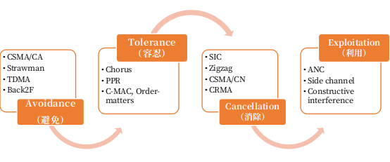
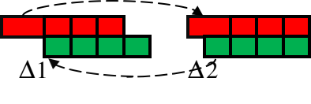

无线网络研究里面，最重要的问题之一就是如何处理无线传输中的数据冲突，简而言之就是无线信道里面如果有两个或者两个以上的设备同时发送数据的话，那么这两个设备发送的数据就很可能在接收设备处产生冲突，冲突的后果通常就是导致两个数据都无法接收，这也是传统的无线处理里面极力想要避免的情况。现有无线冲突处理的一个比较典型的方法就是CSMA（carrier sense multiple access）或者叫做载波帧听多路复用协议，实际上从这个中英文的命名上我们也能看出端倪。载波侦听（carrier sense）指的是使用信道（发送数据）前先侦听信道有没有其他设备发送数据的载波，多路复用（multiple access）指的是有多个设备想要使用同一个信道，因此CSMA方法的主要宗旨就是在发送数据前看看有没有人发送，如果没有的话就发送，如果有的话就进行退避。实际上这样的方法就类似于我们平时开会时候的发言，在发言前我们去看看有没有别人在说话，如果有的话就不去说了，如果没有，那发言人就开始说。
事实上，网络里面大量的冲突处理技术都是以这个为出发点。当然无线网络并不是一门新兴的技术，从其一开始出现到无线网络的大规模兴起，对于他的研究就一直没有中断过。当下对于无线网络的发展，正如大作家狄更斯所说，这是一个最好的时代，也是一个最坏的时代。说他好，我们现在无线网络应用繁多。举一个生活中大家都有切身体会的例子，时至今日，恐怕已经很难有人说自己平时从来不用无线，甚至在没有无线的时候感受到不自在。如果有过出国经验，在国外呆着时候没有网络的时候，对这种“痛苦”也就深有同感且感同身受了。很多人到了一个新的地方，第一个事情不是去看住的地方好不好，而是去看有没有无线网络，更有甚者，无线网络甚至成为了评价旅店、饭馆好坏的重要标准了。最近物联网的兴起也导致了无线网络更加进入到人们的视野，未来更广泛的互联互通是离不开无线技术的支撑。反过来看，无线领域的发展也面临一系列问题，比如无线频谱资源总是有限的，物联网的发展将要连接成千上万的设备，未来使用无线的设备也将与日俱增，如何高效的使用无线资源将是重要的一个问题。总之，毋庸讳言无线网络研究已经上升到了一个前所未有的重要地位。

图2. 无线冲突处理的演变过程
冲突处理的发展¶
总体来看，如图2所示，我们将无线网络冲突处理技术分为四个阶段，分别为避免阶段（avoidance），容忍阶段（tolerance），消去阶段（cancellation）和利用阶段（exploitation）。从这几个阶段也不难看出，如果说第一个阶段是被动避免的话，不难看出冲突的处理手段已经由原来的被动避免逐渐的演化成为了主动利用的阶段。
先说避免阶段，这个阶段也是无线冲突处理里面最广泛使用的一种思路，除了之前提到的CSMA之外，还有很多基于避免思路的方法，如TDMA、FDMA协议，所基于的基本思想是需要尽量避免冲突，比如TDMA协议，就是在发送数据的时候将时间分为时间片来使用信道，每一个设备分配一个固定的时间片来进行数据发送。这样的一些方法能在一定程度上避免冲突的产生。当然这样的避免措施并不是完全没有代价的，比如CSMA里面，就可能仍然会有冲突的出现，从而导致数据的直接丢失，或者在TDMA里面采用固定分时间片方法带来的信道资源浪费问题，抑或者在CSMA里面由于退避策略协调带来的信道资源浪费的问题（读者自己思考为什么会有浪费问题）。
哪里有压迫，哪里就有反抗，这句话放到无线网络冲突里面，应该转变为哪里有冲突，哪里就需要有容忍，既然在一味逃避（避免）的时候会带来一些问题，那么在处理冲突的时候就不得不思考是不是能够适当的容忍。实际上冲突避免策略是一种比较保守的做法，为了避免冲突的发生付出了很大的代价，比如引入了很多空白时间。其实仔细想想，冲突有时候可以不用刻意避免，我们完全可以允许冲突的存在。打个比方，一个屋子里有两个人A，B想说话，其中一个人A声音很大，而另一个人B声音则比较小。如果想让C听到A，B的言语，则完全可以允许A，B同时说话，因为A声音远大于B，这个例子即冲突容忍。所谓的容忍，就是指在冲突发生后能够一定程度缓解冲突所带来的后果。这里的典型技术就包括很多基于编码的方法，基于捕获效应（Capture effect）的方法以及后来提出的MIM技术等。 比如利用capture effect技术[1]，我们就能够在信号发生冲突之后将其中较强的信号恢复出来，但其限制条件是有用信号（SOI）先到或者不晚于其他信号的前导码结束前到达。MIM技术[2]则放低了捕获效应中对时间的要求，在强信号晚于弱信号preamble结束之后到达仍可接收到强信号。除此之外，还有很多其他的方法，比如也有利用信噪比的关系来实现冲突的容忍从而提高数据发送效率等方法[3-9]。
当然更为“高级”的不仅是能够容忍部分冲突，甚至能够在冲突发生的时候把冲突的影响给消除掉。说到这里不得不提一下算法ZigZag [10]，该方法发表在国际通信领域里面的顶级会议SIGCOMM上，这个方法主要思想就是利用冲突时候两个数据包两次冲突的位置不一样这一个特性。直观上来看，如图3所示，当两个数据包发生了两次冲突的时候，通过第一次冲突，数据包模块1可以解析出来，我们将模块1放到第2次冲突中，可以解析出模块2，如此反复，最终能将两个数据包都完整地解析出来，从而奇迹般的将两个数据包的冲突都消除掉。当然这样的一类方法看似简单，背后蕴藏的技术实则繁琐，我们这里就不展开介绍了，感兴趣的读者可以去看看原文。

图3：ZigZag方法中冲突消除的方法
冲突处理还有一个阶段就是冲突利用，与前面3个阶段不一样，在这个阶段里面，冲突不再是“人人喊打”的过街老鼠，也不是被动情况下不得已而“成”之的后果，反而变成了主动添加进去的可以利用的重要信息，着实有一种“变废为宝”和“点石成金”的效果。在这一类方法里面，比较有代表性的就是MobiCom中的一个Side channel [11]，该方法利用数据包传输时的信息冗余，通过有意地在正常数据包上叠加小的数据包，达到传输额外信息的目的，使原来不能同时传输的两个数据包同时进行了传输，接收端不但接收了正常数据包，同时也利用冲突的数据包，从而解析出所需要的两个数据包的信息。 借用论语中的一句话，我们将这种变化总结为“小人同而不和”向“君子和而不同”的一个转变，从最开始的就是不和即有冲突，转变为后来的和而不同，即虽然冲突是存在的但是数据仍然能够和谐的存在。冲突能够被容忍、消去乃至利用起来。
我们的尝试¶
作者也沿着这一思路，做了一些研究上的一些尝试，我们称之为为“认知冲突：由被动到主动”。我们组的第一个工作就是晓宇和我以及其他同事共同完成的，在这一工作中我们提出了利用冲突时候的信号叠加来提高信道使用效率的技术[12]，该工作发表在了IEEE INFOCOM 2014上。在这一个工作中，我们利用不同数目的冲突数据包叠加起来信号强度不同的特点，从冲突的信号强度中分析出在同一信道中发送数据的设备数，进一步的利用该信息改进和优化发送数据的方法，提高数据发送的效率。
另外一个工作是利用冲突信息实现额外信息传输的目的[13]，该工作也发表在IEEE INFOCOM 2014上，在该工作中，我们在信号前导码上叠加控制信息数据包，表面上看叠加上控制信息数据包是加入了冲突，实际上通过对叠加数据包的设计，叠加的数据包非但不会影响原来数据包的传输，而且还能达到传输额外控制信息的目的，最终能够提高信道发送的效率。这两个工作都是通过对冲突信息的利用达到提高信号传输效率的目的。
发展方向的思考：¶
在新趋势下，无线冲突技术的发展仍然面临着一些新的挑战。
在冲突避免方面，传统的冲突避免方法面临着一个两难的问题，退避得越多，信道效率利用率就越低，退避得越少，产生冲突的概率就会越大。这就好比是在开会发言的时候，每一个人越谦让，最后导致浪费的时间就越多，反过来如果每一个人越急着发言，那么产生冲突的概率就越大。如果合理的设置退避的方法将是提高效率的一个关键。同时考虑到在分布式的环境中，每一个设备的策略可能不一样，同时感受到的周围的环境也不一样，这将进一步为协议带来新的挑战。
冲突容忍中，如何降低冲突容忍的需求，同时更加有效和简便的利用冲突容忍的特性将为研究的一个重点。现有冲突容忍的技术中，对两个数据包冲突产生的模式有着很高的要求，有的是要求两个数据包前后的时间差不能太大，有的则是要求两个数据包信号强度的差别要足够大。不管怎么样，都对数据包的发送者提出了很高的要求。对现有方法的总结也不难看出，现有很多的冲突容忍技术都是通过对多个发送者的集中控制来实现的。因此未来来看，能否有效的降低产生可容忍冲突的需求将是一个重要的研究内容，同时在现有的可容忍冲突的条件下，能否在分布式的环境中高效准确的利用可容忍冲突也将是研究中努力的一个方向。
冲突消去的技术，也有很多问题值得我们进一步思考，比如如何在不同的网络环境中，不同的冲突情形下，高效的消去冲突；如何挖掘现在网络环境的特点，比如企业网络特点，最大效率的利用网络特点来达到冲突消去的目的；同时如何更进一步的利用网络信号层面的特征，达到高效可靠消去冲突的目的。随着物联网等技术的发展，各种使用无线的设备也越来越多，如何从异构网络信号中恢复消去冲突，恢复有用信号，保证各种无线设备的和谐共存也将成为研究的重点。 冲突利用中，如何保证冲突利用的效率和成功率将成为研究中重要的一个问题。在冲突的利用中，如何让冲突不会影响正常的数据发送是首当其冲的一个重要问题，否则冲突利用也就陷入了“落花有意，流水无情”的地步了。同时冲突利用中也需要高效准确的协调数据发送方，使得冲突利用得恰当好处。另外，如何合理的在原始数据中加入冲突达到利用冲突的目的，这里我们把主动将一个数据加入到另外一个数据中，从而将两个数据叠加在一起发送的方法统称为主动利用冲突的方法，如何“不多不少”的加入合适的信息这是今后将要研究的一个重要方向。
当年诸葛亮使用空城计，一兵未动，毫发无损的吓退敌军，可谓是化被动为主动的典型案例，不主动出示一兵一卒而退人之兵，当然同样也有赵子龙长坂坡七进七出的主动求战的英勇事迹。历史告诉我们，被动和主动本无所谓孰优孰劣。但是当由本来的被动转变为主动时，也许这样的尝试能够带来不一样的结果，为何不去试一试呢？！